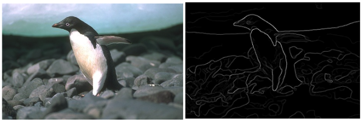

Experience




I create elegant solutions to complex problems through code.
I'm a hands-on robotics and AI engineer who loves tackling difficult, real-world challenges by fusing classical approaches with modern deep learning techniques. My work covers every phase of solution-building—from brainstorming and prototyping to full-scale deployment—and I'm always searching for ways to make systems run more efficiently and reliably.
Collaboration is at the heart of my process. Whether it's rapidly prototyping a proof-of-concept or refining a production-ready design, I thrive in team settings and enjoy bringing diverse perspectives together. My ultimate goal is to bridge the gap between cutting-edge research and industry demands, ensuring that each product I deliver embodies the highest standards of quality, performance, and practical value.
When I'm not immersed in code or robotics, you'll find me exploring the latest AI trends, contributing to knowledge-sharing communities, or simply enjoying the outdoors to recharge and find fresh inspiration.
Robotics Engineering
Worcester Polytechnic Institute
2023 - 2025
Mechanical Engineering
NMIMS, India
2018 - 2022
 Ubuntu
Ubuntu
 MoveIt
MoveIt